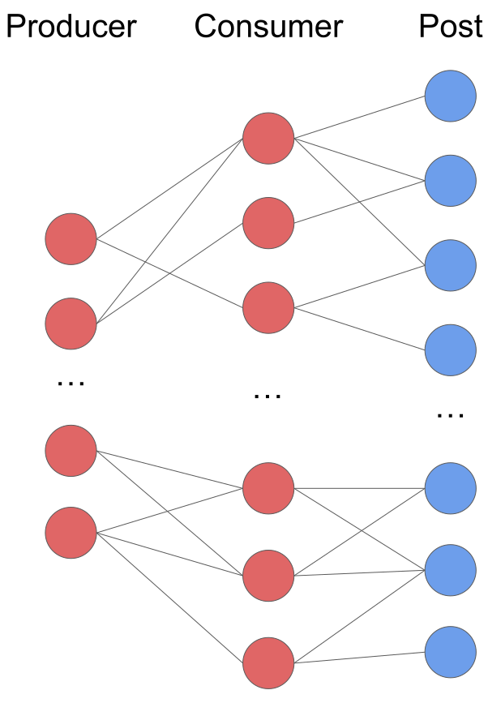
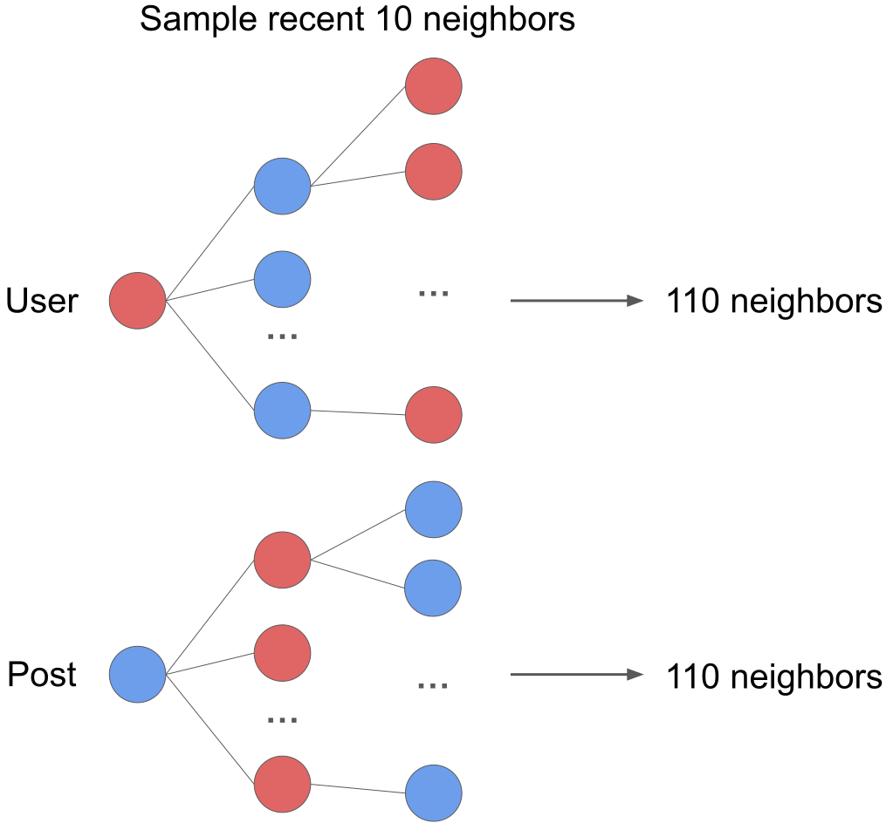

Evaluating Graph Transformers for Scalable Social Media Recommendations
Introduction
What is the problem?
Bluesky represents a new decentralized social media platform that operates on the AT Protocol, allowing open and transparent access to social media data. Unlike traditional platforms such as Twitter or Facebook, where recommendation algorithms are proprietary and opaque, Bluesky provides developers with the opportunity to create custom recommendation systems. However, designing a scalable and personalized recommendation model for an open network presents several challenges.
Traditional recommendation methods based on popularity ranking and static heuristics suffer from the following issues:
- Lack of personalization, where users receive generic content rather than posts tailored to their interests.
- Temporal bias, where older posts continue to be recommended due to accumulated engagement, limiting exposure to new content.
- Computational inefficiency, since real-time recommendation for millions of users interacting with billions of posts requires significant optimization.
Why is this important?
With the rise of decentralized social media, traditional recommendation algorithms need to be re-evaluated for scalability and efficiency in an open setting. Our project explores how graph-based methods, particularly Graph Transformers, can be used to build scalable and personalized recommendation systems for Bluesky.
By leveraging graph structures and temporal learning, we aim to:
- Reduce redundancy in recommended content, ensuring diverse posts appear in user feeds.
- Capture user interaction dynamics, adapting recommendations to real-time engagement.
- Develop a scalable ranking system that remains computationally feasible for large-scale data.
Data Collection

Bluesky provides an open API that streams real-time data across the network. The dataset used in this project consists of two primary interaction types:
- Likes: Users engage with posts by liking them.
- Follows: Users follow others, forming a network of content producers and consumers.

We collect the interaction data from the Bluesky network using an open-source library that efficiently pulls interactions and stores them in a structured database. Since the data is continuously growing, we limit our experiments to a 2023 ~ 2023 (need to check the exact time later) subset, covering an about 1.2 millions of like interactions.
Dataset Summary
| Metric | Count |
|---|---|
| Number of Users | X,XXX |
| Number of Posts | X,XXX |
| Number of Likes | 1,200,000 |
| Number of Followings | X,XXX |
Candidate Generation Using the Consumer-Producer Graph
Candidate generation is the first step in the recommendation pipeline, responsible for retrieving a small subset of relevant posts before ranking. Since directly computing recommendations for the entire dataset is infeasible, we use a consumer-producer bipartite graph to efficiently generate candidate posts.
Structure of the Consumer-Producer Graph
- Users with more than 30 followers are considered as producers.
- Users act as consumers, interacting with posts from a set of producers.
- A directed edge from a user to a producer represents following behavior.
Updating the Consumer-Producer Graph
Since interactions happen in real-time, we maintain dynamic user embeddings:
TODO How is it being updated?
TODO Need to explain what this plot is representing
GraphRec Ranking Model
After candidate generation, the retrieved posts are ranked using GraphRec. The primary goal of GraphRec is to adapt to dynamic user interests while maintaining computational efficiency.
TL;DR
GraphRec enhances ranking quality by:
- Capturing Temporal Trends: Time encodings allow it to model how user preferences change.
- Leveraging Graph Information: Shared neighbors and graph embeddings improve personalization.
- Efficiently Processing Long Sequences: Patching reduces memory usage and speeds up computation.
- Utilizing Self-Attention: Transformers help learn complex dependencies between interactions.
Despite its computational complexity, GraphRec outperforms baseline recommendation models in terms of ranking precision and diversity, making it well-suited for decentralized social media platforms like Bluesky.
Neighborhood Sampling
To efficiently process the vast number of interactions in social media graphs, GraphRec employs neighborhood sampling. Instead of considering the entire interaction history of a user, we select a fixed-size set of neighbors to ensure computational feasibility. By limiting the number of neighbors per node, we reduce memory consumption and improve computational efficiency, making the model suitable for large-scale deployment.

For a given user \(u\) interacting with a post \(p\), we sample the most recent 10 interactions along 2-hop neighbors. This means that each user’s and post’s receptive field consists of:
- 10 direct neighbors (1-hop)
- 10 × 10 = 100 indirect neighbors (2-hop)
Thus, each interaction contains information from 10 + 100 = 110 neighboring nodes. This ensures that the model has sufficient contextual information while remaining computationally feasible.
The selection of recent neighbors follows:
\[\mathcal{N}_\text{recent}(u, t) = \text{Top-}k(\mathcal{N}(u, t), \text{key}=t_j)\]where:
- \(\mathcal{N}(u, t)\) represents the set of posts the user interacted with before time \(t\).
- The top-k most recent interactions are selected based on timestamps \(t_j\).
By prioritizing recent interactions, the model dynamically adapts to users’ evolving interests, ensuring that recommendations remain relevant over time. The 2-hop expansion enables GraphRec to capture both direct and indirect influences, allowing it to effectively model homophily within the Bluesky platform - where users with similar interests tend to engage with overlapping content - while maintaining a manageable computational cost.
Features Used in GraphRec
GraphRec integrates multiple feature types to enhance ranking performance. These features include:
-
Post Raw Text Features:
Each post is represented using Jina Embeddings, a pre-trained text embedding model optimized for large-scale text processing. These embeddings encode semantic relationships between posts, helping the model identify content that is similar in meaning even if the wording differs. -
User Features:
Each user is represented using embeddings derived from the consumer-producer graph, capturing their historical preferences. Instead of treating users as isolated entities, this embedding considers who they follow and what content they interact with, ensuring a personalized recommendation experience. -
Temporal Encoding:
\[\mathbf{X}_t = \sqrt{\frac{1}{d_T}} [\cos(w_1 \Delta t), \sin(w_1 \Delta t), ..., \cos(w_{d_T} \Delta t)]\]
Time plays a crucial role in social media recommendations, as user interests can shift rapidly. To incorporate this temporal information, we apply relative time encodings, which map the elapsed time since the last interaction into a continuous embedding space.where \(\Delta t\) represents the time difference between the current and previous interaction, and \(w_i\) are learnable components that help capture periodic behaviors in user interactions.
-
Shared Neighbors Feature:
In social media, people with similar interests often interact with the same posts, and posts that cover related topics tend to attract overlapping audiences. GraphRec captures this behavior by analyzing shared neighbors between users and posts. Instead of only looking at direct interactions, it examines how a user and a post are connected through mutual engagement patterns.For example, if a user frequently interacts with posts that have also been engaged with by other users with similar interests, GraphRec considers these shared connections to refine recommendations. Similarly, if a post is liked by multiple users who have engaged with similar content in the past, the model recognizes that this post might also be relevant to other users within the same engagement network.
By leveraging shared neighbor information, GraphRec improves its ability to recommend posts that align with user preferences, even when a direct interaction has not yet occurred. This helps the model surface relevant content.
Patching for Scalability
A key challenge in graph-based ranking models is the high computational cost associated with long interaction histories. To address this, GraphRec applies a patching strategy, which splits interaction sequences into fixed-size segments before feeding them into the transformer.
Instead of processing full-length interaction histories, we reshape input sequences into smaller overlapping patches:
\[\mathbf{X} \in \mathbb{R}^{k \times d} \to \mathbf{X}_\text{patched} \in \mathbb{R}^{\frac{k}{p} \times (p \cdot d)}\]where:
- \(k\) is the number of neighbors.
- \(p\) is the patch size, defining how many interactions are grouped together.
- \(d\) represents the feature dimension of each interaction.
By dividing long sequences into patches, GraphRec improves computational efficiency while maintaining the ability to learn meaningful user interaction patterns. This approach ensures that the model can process longer histories without excessive memory consumption, leading to better scalability.
Transformer-Based Ranking
The final stage of GraphRec applies a transformer encoder to learn relationships between the sampled interactions. The transformer consists of:
- Multi-Head Self-Attention to capture interaction dependencies.
- Feed-Forward Networks (FFNs) to project features into the ranking space.
- Residual Connections and Normalization to stabilize training.
Self-Attention Mechanism
Each patch is transformed into query (Q), key (K), and value (V) matrices:
\[Q = X W_Q, \quad K = X W_K, \quad V = X W_V\]where \(W_Q, W_K, W_V\) are trainable weight matrices. The self-attention score is computed as:
\[\text{Attention}(Q, K, V) = \text{Softmax} \left( \frac{Q K^\top}{\sqrt{d_k}} \right) V\]This allows the model to learn how different interactions influence each other. The softmax normalization ensures that the attention scores sum to 1, weighting important interactions higher.
Final Ranking Score
After passing through multiple self-attention layers, the final ranking score for a user-post pair is computed as:
\[\hat{y} = W_2 \cdot \text{ReLU}(W_1 [\mathbf{H}_{user}; \mathbf{H}_{post}] + b_1) + b_2\]where:
- \(W_1, W_2\) are trainable weight matrices.
- \(\mathbf{H}_{user}, \mathbf{H}_{post}\) are the final user and post embeddings.
This ranking score represents the likelihood of a user interacting with a post, and the model is trained using Bayesian Personalized Ranking loss.
Whole Pipeline
Evaluation Metrics
A robust evaluation framework is crucial to assess the effectiveness of the recommendation model. In this study, we employ three key metrics: Hit Rate@K, Mean Reciprocal Rank (MRR), and Intra-List Diversity (ILD). Each of these metrics evaluates different aspects of the recommendation quality, including accuracy, ranking effectiveness, and content diversity.
Hit Rate@K
Hit Rate measures how often the correct post appears within the top-K recommendations. This metric is particularly useful in candidate generation and assessing whether relevant posts are surfaced to the user.
\[\text{HR}@K = \frac{1}{N} \sum_{i=1}^{N} \mathbb{1}(\text{target} \in \text{top-}K)\]where \(\mathbb{1}(\cdot)\) is an indicator function that returns 1 if the target post is within the top-K recommendations, otherwise 0. A higher Hit Rate@K indicates better performance, as it means that the relevant posts are consistently appearing in the top recommended results.
Mean Reciprocal Rank (MRR)
MRR evaluates the ranking quality by considering the position of the target post. Unlike Hit Rate, which only considers presence in the top-K, MRR rewards recommendations that rank relevant posts higher.
\[\text{MRR} = \frac{1}{N} \sum_{i=1}^{N} \frac{1}{\text{rank}_i}\]where \(\text{rank}_i\) is the position of the target post in the recommended list. A higher MRR is desirable as it signifies that relevant posts are placed closer to the top of the ranked list, improving user engagement.
Intra-List Diversity (ILD)
A major concern in recommendation systems is content redundancy, where users receive recommendations that are too similar to each other. ILD measures the diversity of the recommended list by evaluating the dissimilarity between recommended items.
\[\text{ILD} = 1 - \frac{1}{N(N-1)} \sum_{i \neq j} \text{sim}(i, j)\]where \(\text{sim}(i, j)\) represents the similarity between posts \(i\) and \(j\). Higher ILD values indicate that the recommendations are more diverse, reducing echo chamber effects and increasing content exploration. In our evaluation, we compute ILD using cosine similarity between post text embeddings.
Results
The performance of different recommendation models is compared using the above evaluation metrics. The table below presents the results for the Popularity-Based, MLP-Based, and GraphRec models.
NOTE: values are just placeholders
| Model | MRR ↑ | Avg Rank ↓ | ILD ↑ | Training Time (1 epoch) ↓ | Inference Time (s/user) ↓ |
|---|---|---|---|---|---|
| Popularity | 0.32 | 24.7 | 0.45 | 0.05 sec | 0.02 sec |
| MLP-Based | 0.47 | 12.5 | 0.52 | 3.1 sec | 0.19 sec |
| GraphRec | 0.61 | 6.3 | 0.67 | 5.8 sec | 0.34 sec |
The results show that GraphRec achieves the highest Mean Reciprocal Rank (MRR), indicating that relevant posts are ranked higher in the recommendation list compared to other models. This suggests that GraphRec is highly effective at capturing user preferences and ranking relevant content at the top.
Additionally, GraphRec achieves the highest ILD score, meaning it provides a more diverse set of recommendations. This is particularly beneficial in a decentralized social media environment like Bluesky, where exposing users to a wider range of content prevents algorithmic echo chambers and encourages content exploration.
However, there is a trade-off in computational efficiency. GraphRec has the highest training time per epoch and the slowest inference time per user. The increased computational cost is due to the complexity of the transformer-based ranking model, which requires processing graph structures and temporal embeddings. Despite this, the improved ranking accuracy and diversity justify the computational cost for platforms where recommendation quality is a priority.
Future Work
There are several areas for potential improvement in the current recommendation pipeline. One key focus is real-time inference optimization, as the GraphRec model currently has higher computational costs. Techniques such as model distillation, sparse attention mechanisms, or adaptive sampling could help reduce latency while maintaining accuracy.
Another direction for improvement is enhancing user embeddings to incorporate multi-interest representations. Users often engage with content spanning multiple topics, and capturing these diverse interests more effectively could improve personalization. A multi-vector user embedding approach could allow the model to better capture distinct user preferences.
Further, hybrid recommendation models that integrate transformers with message-passing neural networks (MPNNs) could be explored. While transformers excel at capturing global relationships, MPNNs are highly efficient for local neighborhood aggregation in graphs. A combination of these methods could offer a balance between accuracy, diversity, and computational efficiency.
Lastly, expanding the dataset to include additional interaction signals such as comment sentiment, content sharing patterns, and repost histories could enhance the robustness of the recommendation system. By incorporating richer behavioral data, the model could learn more nuanced user preferences and improve its predictive power in suggesting relevant posts.
References
[1] Yu, Le, Leilei Sun, Bowen Du, and Weifeng Lv. 2023.
“Towards Better Dynamic Graph Learning: New Architecture and Unified Library.”
Available at: arXiv:2303.13047.